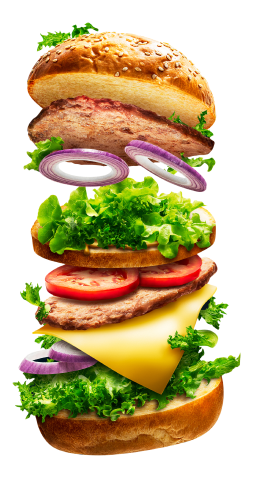

Sokszor vagy fáradt, nincs energiád, nem tudsz figyelni, vagy épp
túlpörögsz? Teszteld magad, és hamarosan kiderül, hogy kellene
étkezned ahhoz, hogy megtapasztald a jobb, egészségesebb önmagad.
(A teszt nem helyettesít semmilyen alapos orvosi kivizsgálást,
csupán útmutatásként szolgál az egészségesebb és környezettudatosabb
táplálkozáshoz)